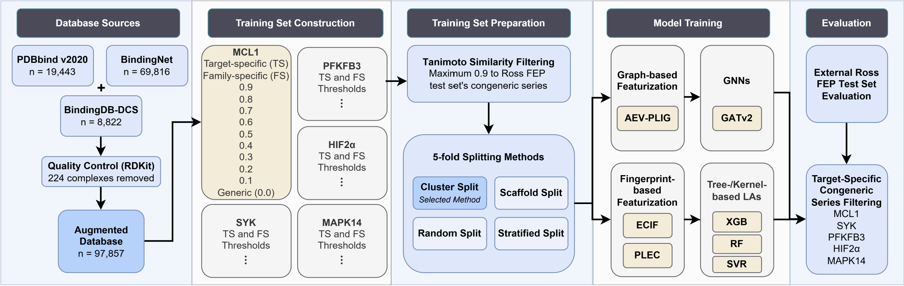
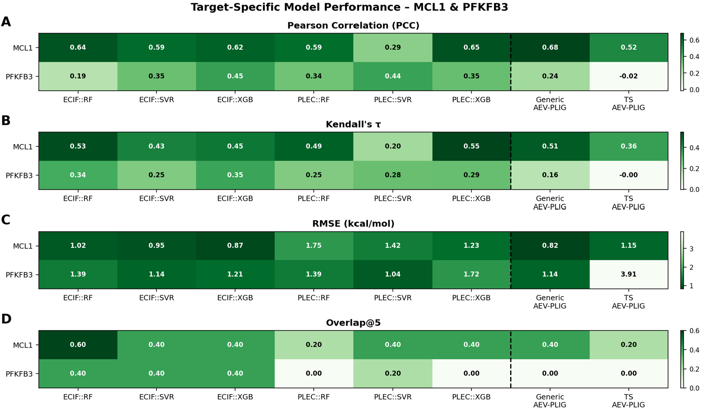
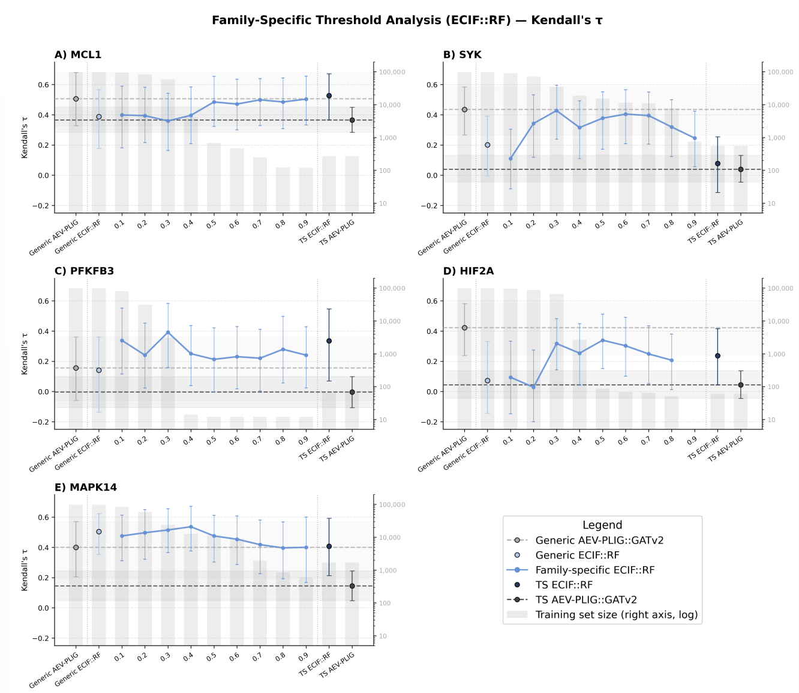
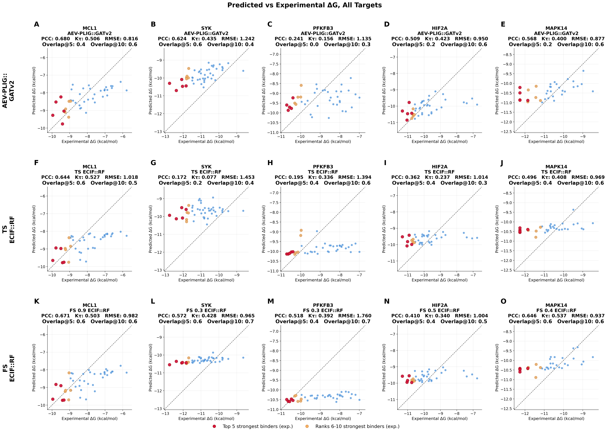
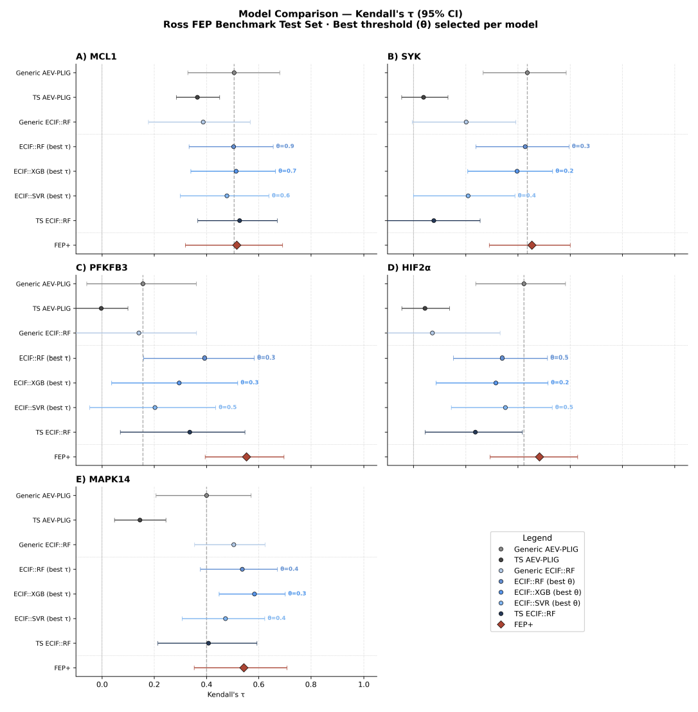

Target Specific Scoring Functions
A new way to approach binding affinity prediction
Target-specific Machine Learning Scoring Functions have the potential to improve upon current generalizable scoring functions, particularly for lead optimization.
Introduction
Bringing a new drug to market requires over a decade of development and investments exceeding $1 billion USD. Modern drug discovery pipelines employ computational methods to supplement high-throughput screening and reduce costs, with current virtual screening pipelines able to evaluate billions of compounds in a single day. Within both virtual screening and lead optimization, binding affinity prediction, the task of estimating the strength of interaction between a protein and a ligand, is central to prioritizing which compounds are worth pursuing.
This project focuses specifically on lead optimization, an iterative stage in which a promising compound is refined to improve its drug-like properties while maintaining or enhancing binding affinity. At this stage, scoring functions must be sufficiently sensitive and specific to capture the effects of small chemical modifications and correctly prioritize high-affinity candidates.
Background
Two methods of binding affinity prediction are most relevant to this work.
Free Energy Perturbation (FEP) is among the most accurate physics-based approaches available. FEP constructs a perturbation map between structurally similar ligands within a congeneric series and predicts relative binding free energies using rigorous statistical mechanics and classical force fields. Despite its accuracy, FEP is computationally demanding, making it impractical for high-throughput applications. In 2023, the Ross FEP Benchmark was published as a gold standard for binding affinity prediction evaluation.
Machine Learning Scoring Functions, such as AEV-PLIG (Atomic Environment Vectors in a Protein-Ligand Interaction Graph), take a fundamentally different approach. AEV-PLIG is a graph neural network (GNN)-based scoring function that encodes the local atomic environment of each atom in the protein-ligand complex. It is trained on large, diverse datasets to maximize generalization across targets and chemical spaces; a design choice in which my study investigates in-depth. AEV-PLIG remains broadly competitive with FEP+ while being significantly less computationally expensive.
The core tension is this: generic models like AEV-PLIG are built to generalize across all targets, but lead optimization is a fundamentally different problem. Compounds are typically confined to a narrow, congeneric chemical series around a known scaffold, and models are repeatedly applied to predict small, fine-grained changes in binding affinity for a single target. A model optimized for breadth may not be the right tool for that job.
Hypothesis and Aims
This brings me to the central question: can scoring functions be improved by training on restricted, target-relevant datasets, even at the cost of reduced data size?
This addresses a real gap in the field. Many current scoring functions, including AEV-PLIG, prioritize generalization but may not be optimized for the high specificity and sensitivity required within a single target or congeneric chemical space — exactly what lead optimization demands.
- Aim 1: Explore the effect of training models using only data for the specific protein target — target-specific models
- Aim 2: Explore the effect of evaluating data quality and relevance using structural similarity as a threshold — family-specific models
- Overall: Evaluate how different featurization schemes and learning algorithms respond to these changes
Protein Targets
Five cancer-related protein targets were selected based on two criteria: all five are cancer-relevant with varying degrees of clinical translation, and each contributes a congeneric series of sufficient size to the Ross FEP Benchmark. Together they span a range of structural and data-richness contexts — from well-characterized systems like MCL1 to more challenging, less-annotated targets like PFKFB3.
| Protein | Full Name | Clinical Stage |
|---|---|---|
| MCL1 | Myeloid Cell Leukemia 1 | Clinical trials |
| SYK | Spleen Tyrosine Kinase | FDA approved |
| HIF2α | Hypoxia-Inducible Factor 2α | FDA approved |
| PFKFB3 | Phosphofructokinase Fructose Bisphosphatase 3 | Preclinical |
| MAPK14 | Mitogen-activated Protein Kinase 14 | Failed trials |
For this page, I’ll focus on MCL1 and PFKFB3 as they best illustrate the range of results. MCL1 is well-conserved, has a single well-defined binding site, and is strongly represented in available training data and therefore, more higly conserved. PFKFB3, on the other hand, has a unique protein fold, multiple binding sites, no approved clinical inhibitors, and very limited structural representation in public databases. It is the hardest target in this study, and as we’ll see, the one where data relevance matters most.
Methods Overview

Each model follows the same pipeline from database to evaluation. Training data was drawn from three databases (PDBbind, BindingNet, BindingDB-DCS), filtered for quality, and split using a 5-fold cluster split to minimize ligand similarity between training and validation sets. Target-specific datasets contain only complexes matching the exact protein target. Family-specific datasets are constructed using TM-align structural similarity scores, where a training complex is included if its TM-score exceeds a given threshold θ, ranging from 0.0 (generic, all data) to 0.9 (highly stringent). All models are evaluated on the Ross FEP Benchmark test set, which is fully held out from training and validation.
Two featurization and model combinations are the focus of this work: ECIF::RF (Extended Connectivity Interaction Fingerprints with a Random Forest) and AEV-PLIG::GATv2 (the graph neural network baseline).
What I Found
Target-Specific Results

The first clear finding was that target-specific AEV-PLIG::GATv2 consistently underperformed its generic counterpart. This suggests that high-capacity GNN architectures are not well-suited to the small training sets available in the target-specific regime.
ECIF::RF told a different story. Looking at Kendall’s τ (ranking performance) and Overlap@5 (top binder retrieval), the target-specific ECIF::RF models outperformed generic AEV-PLIG for several proteins. This distinction matters because in lead optimization, scoring functions are used to prioritize the strongest binders for experimental follow-up. Correctly identifying the highest-affinity compounds is more practically useful than minimizing global prediction error. Kendall’s τ and Overlap@K are therefore the more meaningful metrics here rather than PCC or RMSE alone.
Family-Specific Threshold Analysis

Moving to the second aim, this figure shows ECIF::RF performance across structural similarity thresholds from 0.0 to 0.9, with training set size shown on the right axis. Two findings stand out:
First, the generic ECIF::RF model is never the best performing configuration for any of the five proteins. This directly supports the idea that using all available data should not be the default, and that data relevance is worth considering alongside data quantity.
Second, four of the five proteins show an optimal threshold between 0.3 and 0.5, suggesting a consistent sweet spot between retaining enough data to avoid overfitting and filtering enough to preserve target-relevant signal. PFKFB3 is the clearest example: the family-specific model at threshold 0.3 achieves a 178% improvement in Kendall’s τ over the generic ECIF::RF baseline, using just 3% of the full training data.
Ranking vs. Accuracy

These scatterplots show experimental versus predicted ΔG values for PFKFB3 across the three model types. The dotted line represents perfect prediction. None of the models are spot on, but the type of error differs in an important way.
Generic AEV-PLIG::GATv2 achieves the lowest RMSE of 1.135 kcal/mol but recovers none of the five strongest binders (Overlap@5 = 0.0). The best family-specific ECIF::RF model (FS 0.3) has a substantially higher RMSE of 1.760 kcal/mol.
These predictions are visibly compressed around a narrow range yet correctly identifies two of the five strongest binders and seven of the ten (Overlap@5 = 0.4, Overlap@10 = 0.7). For lead optimization, where identifying the right handful of candidates matters most, that is the more useful model.
Overall Comparison

This forest plot summarizes Kendall’s τ across all key models for each protein, with FEP+ shown as the upper performance reference. The main conclusion here is not that any one model is inherently best, but that data relevance is an important and relatively underexplored axis in binding affinity prediction for lead optimization. Accounting for target-specificity makes these considerably simpler fingerprint-based tree models competitive with AEV-PLIG and, in some cases, approach FEP+ performance, while being over 100,000 times faster.
Conclusion and Takeaways
- Target-specific models are not simply “better” becuase better depends on what you are optimizing for
- In lead optimization, the real task is ranking: deciding which handful of candidates are worth testing next. That is where target- and family-specific models earned their keep
- The data you train a model on should match the question you are asking of it, not just the pile of data you happen to have
- A faster and more intentional target-specific model will never have the breadth of a computationally expensive GNN or a physics-based method, but it may provide the best route for a model suited to its specific purpose
This work is ongoing and I am currently working toward publication. If you are working in this space and want to chat, feel free to reach out!
Full Thesis and Source Code
Target-Specific Binding Affinity Prediction-based Scoring Functions for Lead Optimization
Additional reading:
- The Affinity Advantage- a great overview of the importance of lead optimization and binding affinity
- Narrowing the gap between ML SFs and FEP- the basis of AEV-PLIG::GATv2 used in my work
- The Maximal and Current Accuracy of Rigorous Protein-Ligand BFE Calculations- the Ross FEP Benchmark dataset used for evaluation